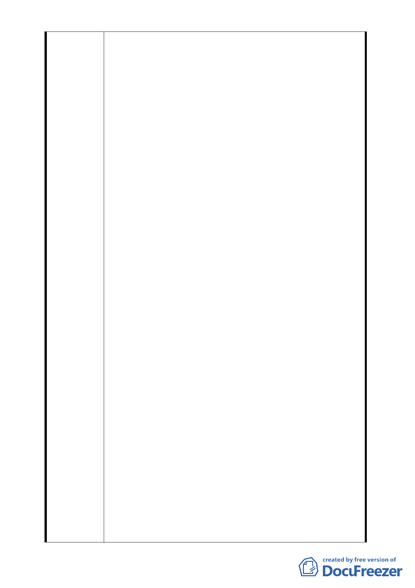

框框所畫書，本基地周邊建築物高度除五樓外就是十
二、十三樓，惟本基地依細部計畫變更內容卻規劃興
建地上 21 層、地下 3 層之建物，如此龐然大物矗立
在國小邊及五樓旁，則顯得格格不入，殘害周圍環境
甚巨，完全無助提升都市空間景觀品質，政府一定要
有更好的宏觀視野、有空間高度之規劃，原住戶需要
的是更細膩的都市計畫，來保障當地居民及後代子孫
的合理居住空間 ，因此，建議本案應對容積獎勵核
准至地上 12 層樓及地下 2 層之水準即可。
2. 本基地依細部計畫變更內容將規劃興建地上 21 層、
地下 3 層之建物，除使居住人數暴增、居住品質下降
外，依細部計畫變更內容亦對原住戶形成嚴重稀釋土
地之持份，卻未換得更好的居住條件，造成權益嚴重
受損，因此，建議本案應對容積獎勵核准至地上 12
層樓 及地下 2 層之水準即可。
3. 依台北市政府 l00 年 9 月 20 日公告「修訂壹北市老
舊中低層建築社區辦理都市更新擴大協助專案計畫」
政策目標，詳細在本基地現況計算在符合政策目標下
，本基地在興建地上 l2 層樓及地下 2 層之水準即可完
全達到前述政府之政策目標 ，依下列七項為計算基
礎:
(1) 本基地更新後建物合計面積
(2) 本基地更新建造總成本
(3) 目前南港本基地附近新成屋平均市價
(4) 本基地住戶若不出任何費用，需要興建之總樓地
板面積
(5) 本基地目前土地總面積（共 80 戶每戶持有土地面
積 1392 坪）
(6) 本基地之使用分區為住三，建蔽率為 45%，可興
建之土地面積
(7) 總興建樓層數
在本基地為白手且更新會之情況下，興建地上 12 層
樓及地下 2 層之水準除可全部滿足現有住戶分回原居
住室內面積之要求外，亦可完全達到前述政府之政策
目標。
二、本社區雖名義上為自組更新會，自主推動更新作業，惟
實際上皆由特定建商在背後操作，此點由更新會所寄給
住戶之郵件資料，皆由該特定建商所在地之郵局掛號寄
出，而非由本社區更新會所在地之南港郵局寄出可知，
因此，本案極力爭取額外之獎勵容積，所獲得利益皆由
特定建商所獲取，而非由住戶所共享，強烈傷害原所有
權人之權益甚巨。
三、本社區更新會在還任配合建商時，皆因某特定人士而選
-5-